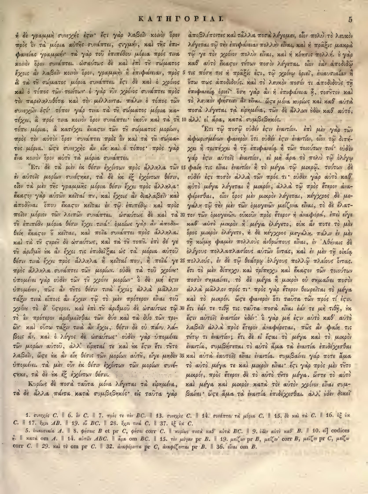

5a
| 1 | ἡ δὲ γραμμὴ συνεχής ἐστιν· <choice><sic>ἔςι</sic><corr>ἔστι</corr></choice> γὰρ λαβεῖν κοινὸν ὅρον | 0.95 |
|---|---|---|
| 2 | πρὸς ὃν τὰ μόρια αὐτῆς συνάπτει, <choice><sic>ςιγμήν</sic><corr>στιγμήν</corr></choice>, καὶ τῆς ἐπι- | 0.95 |
| 3 | φανείας γραμμήν· τὰ γὰρ τοῦ ἐπιπέδου μόρια πρός τινα | 0.95 |
| 4 | κοινὸν ὅρον συνάπτει. ὡσαύτως δὲ καὶ ἐπὶ τῶ σώματος | 0.95 |
| 5 | ἔχοις ἂν λαβεῖν κοινὸν ὅρον, γραμμὴν ἢ ἐπιφάνειαν, πρὸς | 0.95 |
| 6 | ὃ τὰ τοῦ σώματος μόρια συνάπτει. <choice><sic>ἔςι</sic><corr>ἔστι</corr></choice> δὲ καὶ ὁ χρόνος | 0.95 |
| 7 | καὶ ὁ τόπος τῶν τοιούτων· ὁ γὰρ νῦν χρόνος συνάπτει πρὸς | 0.95 |
| 8 | τὸν παρεληλυθότα καὶ τὸν μέλλοντα· πάλιν ὁ τόπος τῶν | 0.95 |
| 9 | συνεχῶν <choice><sic>ἐςί</sic><corr>ἐστί</corr></choice>· τόπον γάρ τινα τὰ τοῦ σώματος μόρια κα- | 0.95 |
| 10 | τέχει, ὃ πρός τινα κοινὸν ὅρον συνάπτει· <choice><sic>ἐνοῦν</sic><corr>οὐκοῦν</corr></choice> καὶ τὰ τοῦ | 0.95 |
| 11 | τόπου μόρια, ἃ κατέχει ἕκαστον τῶν τοῦ σώματος μορίων, | 0.95 |
| 12 | πρὸς τὸν αὐτὸν ὅρον συνάπτει πρὸς ὃν καὶ τὰ τοῦ σώμα- | 0.95 |
| 13 | τος μόρια. ὥστε συνεχὴς ἂν εἴη καὶ ὁ τόπος· πρὸς γὰρ | 0.95 |
| 14 | ἕνα κοινὸν ὅρον αὐτῶ τὰ μόρια συνάπτει. | 0.95 |
| 15 | Ἔτι δὲ τὰ μὲν ἐκ θέσιν ἐχόντων πρὸς ἄλληλα τῶν | 0.95 |
| 16 | ἐν αὐτοῖς μορίων συνέστηκε, τὰ δὲ ἐξ ἓξ ἐχόντων θέσιν, | 0.95 |
| 17 | οἷον τὰ μὲν τῆς γραμμῆς μόρια θέσιν ἔχει πρὸς ἄλληλα· | 0.95 |
| 18 | ἕκαστον γὰρ αὐτῶν κεῖταί που, καὶ ἔχοις ἂν διαλαβεῖν καὶ | 0.95 |
| 19 | ἀποδοῦναι ὅπου ἕκαστον κεῖται ἐν τῶ ἐπιπέδω καὶ πρὸς | 0.95 |
| 20 | ποῖον μόριον τῶν λοιπῶν συνάπτει. ὡσαύτως δὲ καὶ τὰ | 0.95 |
| 21 | τοῦ ἐπιπέδου μόρια θέσιν ἔχει τινά· ὁμοίως γὰρ ἂν ἀποδο- | 0.95 |
| 22 | θείη ἕκαστον ὅ κεῖται, καὶ ποῖα συνάπτει πρὸς ἄλληλα. | 0.95 |
| 23 | καὶ τὰ τοῦ στερεοῦ δὲ ὡσαύτως, καὶ τὰ τοῦ τόπου. ἐπὶ δέ γε | 0.95 |
| 24 | τοῦ ἀριθμοῦ οὐκ ἂν ἔχοι τις ἐπιδεῖξαι ὡς τὰ μόρια αὐτοῦ | 0.95 |
| 25 | θέσιν τινὰ ἔχει πρὸς ἄλληλα ἢ κεῖταί που, ἢ ποιά γε | 0.95 |
| 26 | πρὸς ἄλληλα συνάπτει τῶν μορίων. οὐδὲ τὰ τοῦ χρόνου· | 0.95 |
| 27 | ὑπομένει γὰρ οὐδὲν τῶν τοῦ χρόνου μορίων· ὁ δὲ μὴ ἔστιν | 0.95 |
| 28 | ὑπομένον, πῶς ἂν τοῦτο θέσιν τινὰ ἔχοι; ἀλλὰ μᾶλλον | 0.95 |
| 29 | τάξιν τινὰ εἴποις ἂν ἔχειν· τῶ τὸ μὲν πρότερον εἶναι τοῦ | 0.95 |
| 30 | χρόνου τὸ δ’ ὕστερον. καὶ ἐπὶ τοῦ ἀριθμοῦ δὲ ὡσαύτως τῶ | 0.95 |
| 31 | τὸ ἓν πρότερον ἀριθμεῖσθαι τῶν δύο καὶ τὰ δύο τῶν τρι- | 0.95 |
| 32 | ῶν· καὶ οὕτω τάξιν τινὰ ἂν ἔχοι, θέσιν δὲ οὔ πάνυ. λα- | 0.95 |
| 33 | βοις ἂν. καὶ ὁ λόγος δὲ ὡσαύτως· οὐδὲν γὰρ ὑπομένει | 0.95 |
| 34 | τῶν μορίων αὐτοῦ, ἀλλ’ εἴρηταί τε καὶ οὐκ ἔστιν ἔτι. τοῦτο | 0.95 |
| 35 | λαβεῖν, ὥστε οὐκ ἂν εἴη θέσις τῶν μορίων αὐτῶ, εἴ γε μηδὲν | 0.95 |
| 36 | ὑπομένει. τὰ μὲν οὖν ἐκ θέσιν ἐχόντων τῶν μορίων συνέ- | 0.95 |
| 37 | στηκε, τὰ δὲ ἐξ ἓξ ἐχόντων θέσιν. | 0.95 |
| 38 | Κυρίως δὲ ποσὰ ταῦτα μόνα λέγεται τὰ εἰρημένα, | 0.95 |
| 39 | τὰ δὲ ἄλλα πάντα κατὰ συμβεβηκός· εἰς ταῦτα γὰρ | 0.95 |
5b
| 1 | ἀποβλέποντες καὶ τἆλλα ποσὰ λέγομεν, οἷον πολὺ τὸ λευκὸν | 0.90 |
|---|---|---|
| 2 | λέγεται τῷ τὴν ἐπιφάνειαν πολλὴν εἶναι, καὶ ἡ πρᾶξις μακρὰ | 0.90 |
| 3 | τῷ γε τὸν χρόνον πολὺν εἶναι, καὶ ἡ κίνησις πολλή. ὃ γὰρ | 0.90 |
| 4 | καθ' αὑτὸ ἕκαστον τούτων ποσὸν λέγεται. οἷον ἐὰν ἀποδιδῷ | 0.90 |
| 5 | τις πόση τις ἡ πρᾶξίς ἐστι, τῷ χρόνῳ ὁριεῖ, ἐνιαυσίαν ἢ | 0.90 |
| 6 | οὕτω πως ἀποδιδούς. καὶ τὸ λευκὸν ποσόν τι ἀποδιδοὺς τῇ | 0.90 |
| 7 | ἐπιφανείᾳ ὁριεῖ. ὅση γὰρ ἂν ᾖ ἡ ἐπιφάνεια ᾗ, τοσοῦτον καὶ | 0.90 |
| 8 | τὸ λευκὸν φήσειεν ἂν εἶναι. ὥστε μόνα κυρίως καὶ καθ' αὑτὰ | 0.90 |
| 9 | ποσὰ λέγεται τὰ εἰρημένα, τῶν δὲ ἄλλων οὐδὲν καθ' αὑτό, | 0.90 |
| 10 | ἀλλ' εἰ ἄρα, κατὰ συμβεβηκός. | 0.90 |
| 11 | Ἔτι τῷ ποσῷ οὐδέν <choice><sic>ἐςιν</sic><corr>ἐστιν</corr></choice> ἐναντίον. ἐπὶ μὲν γὰρ τῶν | 0.90 |
| 12 | ἀφωρισμένων φανερὸν ὅτι οὐδέν <choice><sic>ἐςιν</sic><corr>ἐστιν</corr></choice> ἐναντίον, οἷον τῷ διπή- | 0.90 |
| 13 | χει ἢ τριπήχει ἢ τῇ ἐπιφανείᾳ ἢ τῶν τοιούτων τινί· οὐδὲν | 0.90 |
| 14 | γάρ <choice><sic>ἐςιν</sic><corr>ἐστιν</corr></choice> αὐτοῖς ἐναντίον, εἰ μὴ ἄρα τὸ πολὺ τῷ ὀλίγῳ | 0.90 |
| 15 | φαίη τις εἶναι ἐναντίον ἢ τὸ μέγα τῷ μικρῷ. τούτων δὲ | 0.90 |
| 16 | οὐδέν ἐστι ποσὸν ἀλλὰ τῶν πρός τι· οὐδὲν γὰρ αὐτὸ καθ' | 0.90 |
| 17 | αὑτὸ μέγα λέγεται ἢ μικρόν, ἀλλὰ τῷ πρὸς ἕτερον ἀνα- | 0.90 |
| 18 | φέρεσθαι, οἷον ὄρος μὲν μικρὸν λέγεται, κέγχρος δὲ με- | 0.90 |
| 19 | γάλη· τῷ τὴν μὲν τῶν ὁμογενῶν μείζονα εἶναι, τὸ δὲ ἔλατ- | 0.90 |
| 20 | τον τῶν ὁμογενῶν. οὐκοῦν πρὸς ἕτερον ἡ ἀναφορά, ἐπεί γε | 0.90 |
| 21 | καθ' αὑτὸ μικρὸν ἢ μέγα ἐλέγετο, οὐκ ἄν ποτε τὸ μὲν | 0.90 |
| 22 | ὄρος μικρὸν ἐλέγετο, ἡ δὲ κέγχρος μεγάλη. πάλιν ἐν μὲν | 0.90 |
| 23 | τῇ κώμῃ φαμὲν πολλοὺς ἀνθρώπους εἶναι, ἐν Ἀθήναις δὲ | 0.90 |
| 24 | ὀλίγους πολλαπλασίους αὐτῶν ὄντας, καὶ ἐν μὲν τῇ οἰκίᾳ | 0.90 |
| 25 | πολλούς, ἐν δὲ τῷ θεάτρῳ ὀλίγους· πολλῷ πλείους ὄντας. | 0.90 |
| 26 | ἔτι τὸ μὲν δίπηχυ καὶ τρίπηχυ καὶ ἕκαστον τῶν τοιούτων | 0.90 |
| 27 | ποσὸν σημαίνει, τὸ δὲ μέγα ἢ μικρὸν οὐ σημαίνει ποσὸν | 0.90 |
| 28 | ἀλλὰ μᾶλλον πρός τι· πρὸς γὰρ ἕτερον θεωρεῖται τὸ μέγα | 0.90 |
| 29 | καὶ τὸ μικρόν. <choice><sic>ὥςε</sic><corr>ὥστε</corr></choice> φανερὸν ὅτι ταῦτα τῶν πρός τί <choice><sic>ἐςιν</sic><corr>ἐστιν</corr></choice>. | 0.90 |
| 30 | ἔτι ἐάν τε τιθῇ τις ταῦτα ποσὰ εἶναι ἐάν τε μὴ τιθῇ, οὐκ | 0.90 |
| 31 | <choice><sic>ἔςιν</sic><corr>ἔστιν</corr></choice> αὐτοῖς ἐναντίον οὐδέν· ὃ γὰρ μή <choice><sic>ἐςιν</sic><corr>ἐστιν</corr></choice> αὐτὸ καθ' αὑτὸ | 0.90 |
| 32 | λαβεῖν ἀλλὰ πρὸς ἕτερον ἀναφέρεται, πῶς ἂν φαίη τις | 0.90 |
| 33 | τούτῳ τι ἐναντίον; ἔτι δὲ εἰ <choice><sic>ἔςαι</sic><corr>ἔσται</corr></choice> τὸ μέγα καὶ τὸ μικρὸν | 0.90 |
| 34 | ἐναντία, συμβήσεται τὸ αὐτὸ ἅμα τὰ ἐναντία ἐπιδέχεσθαι | 0.90 |
| 35 | καὶ αὐτὰ ἑαυτοῖς εἶναι ἐναντία. συμβαίνει γάρ ποτε ἅμα | 0.90 |
| 36 | τὸ αὐτὸ μέγα τε καὶ μικρὸν εἶναι· <choice><sic>ἔςι</sic><corr>ἔστι</corr></choice> γὰρ πρὸς μὲν τόδε | 0.90 |
| 37 | μικρόν, πρὸς ἕτερον δὲ τὸ αὐτὸ τοῦτο μέγα. ὥστε τὸ αὐτὸ | 0.90 |
| 38 | καὶ μέγα καὶ μικρὸν κατὰ τὸν αὐτὸν χρόνον εἶναι συμ- | 0.90 |
| 39 | βαίνει· <choice><sic>ὥςε</sic><corr>ὥστε</corr></choice> ἅμα τὰ ἐναντία ἐπιδέχεσθαι. ἀλλ' οὐδὲν δοκεῖ | 0.90 |
Textual apparatus
- note_1 [both] 1. συνεχές C. || 6. ὧν C. || 7. πρός τε τὸν BC. || 13. συνεχές C. || 14. συνάπτει· τὰ μόρια C. || 15. δὲ καὶ τὰ C. || 16. ἐξ ὧν C. || 17. ἔχοι AB. || 19. οὗ BC. || 28. ἔχοι τινά C. || 37. ἐξ ὧν C.
- note_2 [both] 5. ἐναυστιαία A. || 8. φήσεις B et pr C, φήσει corr C. || κυρίως ποσὰ καθ’ αὑτὰ BC. || 9. ἐὰν αὑτὸ καθ’ B. || 10. εἰ] codices ἡ. || κατὰ om A. || 14. αὐτῶν ABC. || ἄρα om BC. || 15. τὸν μέγαν pr B. || 19. μείζων pr B, μείζον’ corr B, μείζον pr C, μείζω corr C. || 29. καὶ τὸ om pr C. || 32. ἀναφέροντα pr C, ἀναφέζονται pr B. || 36. εἶναι om B.
Verifier issues
- No verifier or gutter-overlap issues.
Encoded TEI corrections (15)
- a10: <choice><sic>ἐνοῦν</sic><corr>οὐκοῦν</corr></choice> (0.95) — The scan clearly shows οὐκοῦν at the start of line 10; the extraction's ἐνοῦν is a misreading of the same ligature sequence.
- a1: <choice><sic>ἔςι</sic><corr>ἔστι</corr></choice> (1.00) — Aligned Hathi στ-ligature OCR correction: deterministic repair of the Hathi internal final sigma agrees with the scan and reference crop.
- a2: <choice><sic>ςιγμήν</sic><corr>στιγμήν</corr></choice> (1.00) — Aligned Hathi στ-ligature OCR correction: deterministic repair of the Hathi internal final sigma agrees with the scan and reference crop.
- a6: <choice><sic>ἔςι</sic><corr>ἔστι</corr></choice> (1.00) — Aligned Hathi στ-ligature OCR correction: deterministic repair of the Hathi internal final sigma agrees with the scan and reference crop.
- a9: <choice><sic>ἐςί</sic><corr>ἐστί</corr></choice> (1.00) — Aligned Hathi στ-ligature OCR correction: deterministic repair of the Hathi internal final sigma agrees with the scan and reference crop.
- b11: <choice><sic>ἐςιν</sic><corr>ἐστιν</corr></choice> (1.00) — Aligned Hathi στ-ligature OCR correction: deterministic repair of the Hathi internal final sigma agrees with the scan and reference crop.
- b12: <choice><sic>ἐςιν</sic><corr>ἐστιν</corr></choice> (1.00) — Aligned Hathi στ-ligature OCR correction: deterministic repair of the Hathi internal final sigma agrees with the scan and reference crop.
- b14: <choice><sic>ἐςιν</sic><corr>ἐστιν</corr></choice> (1.00) — Aligned Hathi στ-ligature OCR correction: deterministic repair of the Hathi internal final sigma agrees with the scan and reference crop.
- b29: <choice><sic>ὥςε</sic><corr>ὥστε</corr></choice> (1.00) — Aligned Hathi στ-ligature OCR correction: deterministic repair of the Hathi internal final sigma agrees with the scan and reference crop.
- b29: <choice><sic>ἐςιν</sic><corr>ἐστιν</corr></choice> (1.00) — Aligned Hathi στ-ligature OCR correction: deterministic repair of the Hathi internal final sigma agrees with the scan and reference crop.
- b31: <choice><sic>ἔςιν</sic><corr>ἔστιν</corr></choice> (1.00) — Aligned Hathi στ-ligature OCR correction: deterministic repair of the Hathi internal final sigma agrees with the scan and reference crop.
- b31: <choice><sic>ἐςιν</sic><corr>ἐστιν</corr></choice> (1.00) — Aligned Hathi στ-ligature OCR correction: deterministic repair of the Hathi internal final sigma agrees with the scan and reference crop.
- b33: <choice><sic>ἔςαι</sic><corr>ἔσται</corr></choice> (1.00) — Aligned Hathi στ-ligature OCR correction: deterministic repair of the Hathi internal final sigma agrees with the scan and reference crop.
- b36: <choice><sic>ἔςι</sic><corr>ἔστι</corr></choice> (1.00) — Aligned Hathi στ-ligature OCR correction: deterministic repair of the Hathi internal final sigma agrees with the scan and reference crop.
- b39: <choice><sic>ὥςε</sic><corr>ὥστε</corr></choice> (1.00) — Aligned Hathi στ-ligature OCR correction: deterministic repair of the Hathi internal final sigma agrees with the scan and reference crop.